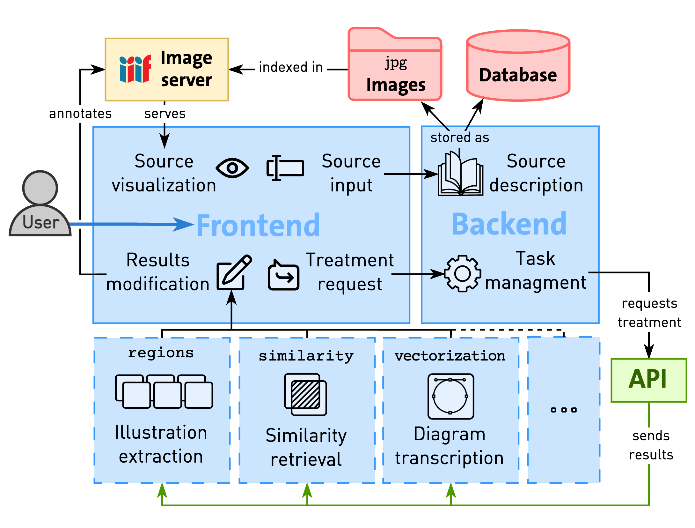

Overview
At its core, Aikon allows researchers to describe their sources, import scans, request automatic processing, and manually refine results. Built on proven technologies and interoperable formats, including established standards such as IIIF, the platform's architecture supports a wide range of visual materials. Aikon's data model, centered around the concepts of Series, Witness, and Content, provides a flexible framework capable of describing diverse source materials while facilitating alignment across varied corpora.
The platform's modular structure enables easy integration of additional functionalities, with current applications including illustration extraction, similarity search, and vectorization. Aikon is not tied to any predetermined analysis methods; all stages can be performed manually or automated, with specialized models customizable to specific datasets. This approach ensures adaptability to various research needs while maintaining reproducibility. By fostering interdisciplinary collaboration and sustainability across digital humanities projects, Aikon aims to assist researchers to explore corpora at an unprecedented scale, helping bridging the gap between advanced computational methods and the nuanced requirements of humanities research.